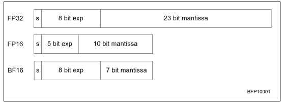
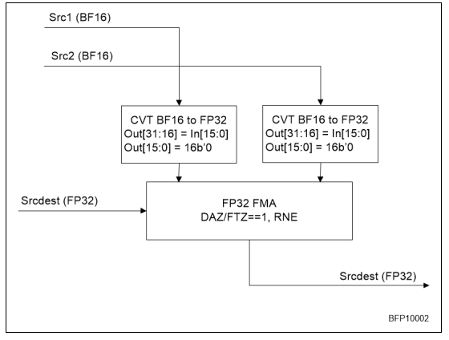

Of the various types of data that one normally encounters, the ones we are concerned with in the context of scientific computing are the numerical types: integers (or whole numbers) $\ldots,-2,-1,0,1,2,\ldots$, real numbers $0,1,-1.5,2/3,\sqrt 2,\log 10,\ldots$, and complex numbers $1+2i,\sqrt 3-\sqrt 5i,\ldots$. Computer hardware is organized to give only a certain amount of space to represent each number, in multiples of bytes, each containing 8~bits. Typical values are 4 bytes for an integer, 4~or~8 bytes for a real number, and 8~or~16 bytes for a complex number.
Since only a certain amount of memory is available to store a number, it is clear that not all numbers of a certain type can be stored. For instance, for integers only a range is stored. (Languages such as Python have arbitrarily large integers , but this has no hardware support.) In the case of real numbers, even storing a range is not possible since any interval $[a,b]$ contains infinitely many numbers. Therefore, any representation of real numbers will cause gaps between the numbers that are stored. Calculations in a computer are sometimes described as finite precision arithmetic . Since many results are not representable, any computation that results in such a number will have to be dealt with by issuing an error or by approximating the result. In this chapter we will look at the ramifications of such approximations of the `true' outcome of numerical calculations.
For detailed discussions,
crumb trail: > arithmetic > Bits
At the lowest level, computer storage and computer numbers are organized in bit s. A~bit, short for `binary digit', can have the values zero and one. Using bits we can then express numbers in binary notation: \[ \mathtt{10010}_2 \equiv \mathtt{18}_{10} \] where the subscript indicates the base of the number system, and in both cases the rightmost digit is the least significant one.
The next organizational level of memory is the byte : a~byte consists of eight bits, and can therefore represent the values~$0\cdots 255$.
Use bit operations to test whether a number is odd or even.\\ Can you think of more than one way?{Bit operations}
crumb trail: > arithmetic > Integers
In scientific computing, most operations are on real numbers. Computations on integers rarely add up to any serious computation load, except in applications such as cryptography. There are also applications such as `particle-in-cell' that can be implemented with bit operations. However, integers are still encountered in indexing calculations.
Integers are commonly stored in 16, 32, or 64 bits, with 16 becoming less common and 64 becoming more and more so. The main reason for this increase is not the changing nature of computations, but the fact that integers are used to index arrays. As the size of data sets grows (in particular in parallel computations), larger indices are needed. For instance, in 32 bits one can store the numbers zero through $2^{32}-1\approx 4\cdot 10^9$. In other words, a 32 bit index can address 4 gigabytes of memory. Until recently this was enough for most purposes; these days the need for larger data sets has made 64 bit indexing necessary.
When we are indexing an array, only positive integers are needed. In general integer computations, of course, we need to accommodate the negative integers too. We will now discuss several strategies for implementing negative integers. Our motivation here will be that arithmetic on positive and negative integers should be as simple as on positive integers only: the circuitry that we have for comparing and operating on bitstrings should be usable for (signed) integers.
There are several ways of implementing negative integers. The simplest solution is to reserve one bit as a sign bit , and use the remaining 31 (or 15 or 63; from now on we will consider 32 bits the standard) bits to store the absolute magnitude. By comparison, we will call the straightforward interpretation of bitstrings as unsigned integers.
\[ \begin{array}{|c|rrrrrr|} \hline \hbox{bitstring}& 00\cdots0&…&01\cdots1& 10\cdots0&…&11\cdots1\\ \hline \hbox{interpretation as unsigned int}& 0&…&2^{31}-1& 2^{31}&…&2^{32}-1\\ \hline \hbox{interpretation as signed integer}& 0&\cdots&2^{31}-1& -0&\cdots&-(2^{31}-1)\\ \hline \end{array} \]
This scheme has some disadvantages, one being that there is both a positive and negative number zero. This means that a test for equality becomes more complicated than simply testing for equality as a bitstring. More importantly, in the second half of the bitstring, the interpretation as signed integer decreases, going to the right. This means that a test for greater-than becomes complex; also adding a positive number to a negative number now has to be treated differently from adding it to a positive number.
Another solution would be to let an unsigned number $n$ be interpreted as $n-B$ where $B$ is some plausible bias, for instance $2^{31}$.
\[ \begin{array}{|c|rrrrrr|} \hline \hbox{bitstring}& 00\cdots0&…&01\cdots1& 10\cdots0&…&11\cdots1\\ \hline \hbox{interpretation as unsigned int}& 0&…&2^{31}-1& 2^{31}&…&2^{32}-1\\ \hline \hbox{interpretation as shifted int}& -2^{31}&…&-1& 0&…&2^{31}-1\\ \hline \end{array} \]
This shifted scheme does not suffer from the $\pm0$ problem, and numbers are consistently ordered. However, if we compute $n-n$ by operating on the bitstring that represents $n$, we do not get the bitstring for zero.
To ensure this desired behavior, we instead rotate the number line with positive and negative numbers to put the pattern for zero back at zero. The resulting scheme, which is the one that is used most commonly, is called 2's complement . Using this scheme, the representation of integers is formally defined as follows.
Let $n$ be an integer, then the 2's complement `bit pattern' $\beta(n)$ is a non-negative integer defined as follows:We denote the inverse function that takes a bit pattern and interprets as integer with $\eta=\beta\inv$.
The following diagram shows the correspondence between bitstrings and their interpretation as 2's complement integer: \[ \begin{array}{|c|rrrrrr|} \hline \hbox{bitstring $n$}& 00\cdots0&…&01\cdots1& 10\cdots0&…&11\cdots1\\ \hline \hbox{interpretation as unsigned int}& 0&…&2^{31}-1& 2^{31}&…&2^{32}-1\\ \hline \hbox{interpretation $\beta(n)$ as 2's comp. integer}& 0&\cdots&2^{31}-1& -2^{31}&\cdots&-1\\ \hline \end{array} \]
Some observations:
For the `naive' scheme and the 2's complement scheme for negative numbers, give pseudocode for the comparison test $m<n$, where $m$ and $n$ are integers. Be careful to distinguish between all cases of $m,n$ positive, zero, or negative.
crumb trail: > arithmetic > Integers > Integer overflow
Adding two numbers with the same sign, or multiplying two numbers of any sign, may lead to a result that is too large or too small to represent. This is called overflow ; see section 3.3.4 for the corresponding floating point phenomenon. The following exercise lets you explore the behavior of an actual program.
Investigate what happens when you perform such a calculation. What does your compiler say if you try to write down a nonrepresentable number explicitly, for instance in an assignment statement?If you program this in C, it is worth noting that while you probably get an outcome that is understandable, the behavior of overflow in the case of signed quantities is actually undefined under the C standard.
crumb trail: > arithmetic > Integers > Addition in two's complement
Let us consider doing some simple arithmetic on 2's complement integers. We start by assuming that we have hardware that works on unsigned integers. The goal is to see that we can use this hardware to do calculations on signed integers, as represented in 2's complement.
We consider the computation of $m+n$, where $m,n$ are representable numbers: \[ 0\leq |m|,|n|<2^{31}. \] We distinguish different cases.
FIGURE 3.1: Addition with one positive and one negative number in 2's complement
crumb trail: > arithmetic > Integers > Subtraction in two's complement
In exercise 3.2 above you explored comparing two integers. Let us now explore how subtracting numbers in two's complement is implemented. Consider $0\leq m\leq 2^{31}-1$ and $1\leq n\leq 2^{31}$ and let us see what happens in the computation of $m-n$.
Suppose we have an algorithm for adding and subtracting unsigned 32-bit numbers. Can we use that to subtract two's complement integers? We start by observing that the integer subtraction $m-n$ becomes the unsigned addition $m+(2^{32}-n)$.
In both cases we conclude that we can perform the subtraction $m-n$ by adding the unsigned number that represent $m$ and $-n$ and ignoring overflow if it occurs.
crumb trail: > arithmetic > Integers > Binary coded decimal
Decimal numbers are not relevant in scientific computing, but they are useful in financial calculations, where computations involving money absolutely have to be exact. Binary arithmetic is at a disadvantage here, since numbers such as $1/10$ are repeating fractions in binary. With a finite number of bits in the mantissa , this means that the number $1/10$ can not be represented exactly in binary. For this reason, binary-coded-decimal schemes were used in old IBM mainframes, and are in fact being standardized in revisions of IEEE 754 [754-2019,ieee754-webpage] ; see also section 3.3.7 .
In BCD schemes, one or more decimal digits are encoded in a number of bits. The simplest scheme would encode the digits $0…9$ in four bits. This has the advantage that in a BCD number each digit is readily identified; it has the disadvantage that about $1/3$ of all bits are wasted, since 4 bits can encode the numbers $0…15$. More efficient encodings would encode $0…999$ in ten bits, which could in principle store the numbers $0…1023$. While this is efficient in the sense that few bits are wasted, identifying individual digits in such a number takes some decoding. For this reason, BCD arithmetic needs hardware support from the processor, which is rarely found these days; one example is the IBM Power architecture, starting with the IBM Power6 .
crumb trail: > arithmetic > Integers > Other number bases for computer arithmetic
There have been some experiments with ternary arithmetic (see http://en.wikipedia.org/wiki/Ternary_computer and http://www.computer-museum.ru/english/setun.htm ), however, no practical hardware exists.
crumb trail: > arithmetic > Real numbers
In this section we will look at how real numbers are represented in a computer, and the limitations of various schemes. The next section will then explore the ramifications of this for arithmetic involving computer numbers.
crumb trail: > arithmetic > Real numbers > They're not really real numbers
In the mathematical sciences, we usually work with real numbers, so it's convenient to pretend that computers can do this too. However, since numbers in a computer have only a finite number of bits, most real numbers can not be represented exactly. In fact, even many fractions can not be represented exactly, since they repeat; for instance, $1/3=0.333…$, which is not representible in either decimal or binary. An illustration of this is given in appendix sec:fraction-code .
Some programming languages allow you to write loops with not just an integer, but also with a real number as `counter'. Explain why this is a bad idea. Hint: when is the upper bound reached?Whether a fraction repeats depends on the number system. (How would you write $1/3$ in ternary, or base 3, arithmetic?) In binary computers this means that fractions such as $1/10$, which in decimal arithmetic are terminating, are repeating. Since decimal arithmetic is important in financial calculations, some people care about the accuracy of this kind of arithmetic; see section 3.2.4 for what was done about it.
Show that each binary fraction, that is, a number of the form $0.01010111001_2$, can exactly be represented as a terminating decimal fraction. What is the reason that not every decimal fraction can be represented as a binary fraction?
crumb trail: > arithmetic > Real numbers > Representation of real numbers
Real numbers are stored using a scheme that is analogous to what is known as `scientific notation', where a number is represented as a significand and an exponent , for instance $6.022\cdot 10^{23}$, which has a significand 6022 with a radix point after the first digit, and an exponent 23 . This number stands for \[ 6.022\cdot 10^{23}= \left[ 6\times 10^0+0\times 10^{-1}+2\times10^{-2}+2\times10^{-3} \right] \cdot 10^{23}. \] We introduce a base , a small integer number, 10 in the preceding example, and 2 in computer numbers, and write numbers in terms of it as a sum of $t$ terms:
\begin{array}{rl} x &= \pm 1 \times \left[ d\_1\beta^0+d\_2\beta^{-1}+d\_3\beta^{-2}+\cdots+d\_t\beta^{-t+1}b\right] \times \beta^e \\ & = \pm \Sigma\_{i=1}^t d\_i\beta^{1-i} \times\beta^e \end{array} \label{eq:floatingpoint-def} \end{equation}where the components are
Note that there is an explicit sign bit for the whole number; the sign of the exponent is handled differently. For reasons of efficiency, $e$ is not a signed number; instead it is considered as an unsigned number in excess of a certain minimum value. For instance, the bit pattern for the number zero is interpreted as $e= L$.
crumb trail: > arithmetic > Real numbers > Representation of real numbers > Some examples
Let us look at some specific examples of floating point representations. Base 10 is the most logical choice for human consumption, but computers are binary, so base 2 predominates there. Old IBM mainframes grouped bits to make for a base 16 representation.
\[ \begin{array}{r|r|r|r|r} &\beta&t&L&U\\ \hline \hbox{IEEE single precision (32 bit)}&2&23&-126&127\\ \hbox{IEEE double precision (64 bit)}&2&53&-1022&1023\\ \hbox{Old Cray 64 bit}&2&48&-16383&16384\\ \hbox{IBM mainframe 32 bit}&16&6&-64&63\\ \hbox{packed decimal}&10&50&-999&999\\ \end{array} \]
Of these, the single and double precision formats are by far the most common. We will discuss these in section 3.3.7 and further.
crumb trail: > arithmetic > Real numbers > Normalized and unnormalized numbers
The general definition of floating point numbers, equation \eqref{eq:floatingpoint-def}, leaves us with the problem that numbers have more than one representation. For instance, $.5\times10^{2}=.05\times 10^3$. Since this would make computer arithmetic needlessly complicated, for instance in testing equality of numbers, we use numbers}. A number is normalized if its first digit is nonzero. The implies that the mantissa part is $\beta> x_m\geq 1$.
A practical implication in the case of binary numbers is that the first digit is always 1, so we do not need to store it explicitly. In the IEEE 754 standard, this means that every floating point number is of the form \[ 1.d_1d_2… d_t\times 2^{\mathrm exp} \] and only the digits $d_1d_2… d_t$ are stored.
crumb trail: > arithmetic > Real numbers > Limitations: overflow and underflow
Since we use only a finite number of bits to store floating point numbers, not all numbers can be represented. The ones that can not be represented fall into two categories: those that are too large or too small (in some sense), and those that fall in the gaps.
The second category, where a computational result has to be rounded or truncated to be representable, is the basis of the field of round-off error analysis. We will study this in some detail in the following sections.
Numbers can be too large or too small in the following ways.
The fact that only a small number of real numbers can be represented exactly is the basis of the field of round-off error analysis. We will study this in some detail in the following sections.
The occurrence of overflow or underflow means that your computation will be `wrong' from that point on. Underflow will make the computation proceed with a zero where there should have been a nonzero; overflow is represented as Inf , short of `infinite'.
For real numbers $x,y$, the quantity $g=\sqrt{(x^2+y^2)/2}$ satisfies \[ g\leq \max\{|x|,|y|\} \] so it is representable if $x$ and $y$ are. What can go wrong if you compute $g$ using the above formula? Can you think of a better way?
Computing with Inf is possible to an extent: adding two of those quantities will again give Inf . However, subtracting them gives NaN : `not a number'. (See section 3.3.8.1 .)
In none of these cases will the computation end: the processor will continue, unless you tell it otherwise. The `otherwise' consists of you telling the compiler to generate an interrupt , which halts the computation with an error message. See section 3.6.6 .
crumb trail: > arithmetic > Real numbers > Limitations: overflow and underflow > Gradual underflow
Another implication of the normalization scheme is that we have to amend the definition of underflow (see section 3.3.4 above): any number less than $1\cdot\beta^L$ now causes underflow. Trying to compute a number less than that in absolute value is sometimes handled by using subnormal (or denormalized % or unnormalized % ) numbers, a process known as gradual underflow . In this case, a special value of the exponent indicates that the number is no longer normalized. In the case IEEE standard arithmetic (section 3.3.7 ) this is done through a zero exponent field.
However, this is typically tens or hundreds of times slower than computing with regular floating point numbers
{In real-time applications such as audio processing this phenomenon is especially noticeable; see http://phonophunk.com/articles/pentium4-denormalization.php?pg=3 .} ). At the time of this writing, only the IBM Power6 has hardware support for gradual underflow.
crumb trail: > arithmetic > Real numbers > Representation error
Let us consider a real number that is not representable in a computer's number system.
An unrepresentable number is approximated either by ordinary rounding , rounding up or down, or truncation . This means that a machine number $\tilde x$ is the representation for all $x$ in an interval around it. With $t$ digits in the mantissa , this is the interval of numbers that differ from $\bar x$ in the $t+1$st digit. For the mantissa part we get: \[ \begin{cases} x\in \left[\tilde x,\tilde x+\beta^{-t+1}\right)&\hbox{truncation}\\ x\in \left[\tilde x-\frac12 \beta^{-t+1},\tilde x+\frac12 \beta^{-t+1}\right) &\hbox{rounding} \end{cases} \]
If $x$ is a number and $\tilde x$ its representation in the computer, we call $x-\tilde x$ the representation error or absolute representation error , and $\frac{x-\tilde x}{x}$ the relative representation error . Often we are not interested in the sign of the error, so we may apply the terms error and relative error to $|x-\tilde x|$ and $|\frac{x-\tilde x}{x}|$ respectively.
Often we are only interested in bounds on the error. If $\epsilon$ is a bound on the error, we will write \[ \tilde x = x\pm\epsilon \defined |x-\tilde x|\leq\epsilon \Leftrightarrow \tilde x\in[x-\epsilon,x+\epsilon] \] For the relative error we note that \[ \tilde x =x(1+\epsilon) \Leftrightarrow \left|\frac{\tilde x-x}{x}\right|\leq \epsilon \]
Let us consider an example in decimal arithmetic, that is, $\beta=10$, and with a 3-digit mantissa: $t=3$. The number $x=1.256$ has a representation that depends on whether we round or truncate: $\tilde x_{\mathrm{round}}=1.26$, $\tilde x_{\mathrm{truncate}}=1.25$. The error is in the 4th digit: if $\epsilon=x-\tilde x$ then $|\epsilon|<\beta^{-(t-1)}$.
The number in this example had no exponent part. What are the error and relative error if there had been one? In binary arithmetic the unit digit is always 1 as remarked above. How does that change the representation error?
crumb trail: > arithmetic > Real numbers > Machine precision
Often we are only interested in the order of magnitude of the representation error, and we will write $\tilde x=x(1+\epsilon)$, where $|\epsilon|\leq\beta^{-t}$. This maximum relative error is called the precision}, or sometimes machine epsilon epsilon|see{machine precision}}. Typical values are: \[ \begin{cases} \epsilon\approx10^{-7}&\hbox{32-bit single precision}\\ \epsilon\approx10^{-16}&\hbox{64-bit double precision} \end{cases} \] Machine precision can be defined another way: $\epsilon$ is the smallest number that can be added to $1$ so that $1+\epsilon$ has a different representation than $1$. A small example shows how aligning exponents can shift a too small operand so that it is effectively ignored in the addition operation: \[ \begin{array}{cll} &1.0000&\times 10^0\\ +&1.0000&\times 10^{-5}\\ \hline \end{array} \quad\Rightarrow\quad \begin{array}{cll} &1.0000&\times 10^0\\ +&0.00001&\times 10^0\\ \hline =&1.0000&\times 10^0 \end{array} \] Yet another way of looking at this is to observe that, in the addition $x+y$, if the ratio of $x$ and $y$ is too large, the result will be identical to $x$.
The machine precision is the maximum attainable accuracy of computations: it does not make sense to ask for more than 6-or-so digits accuracy in single precision, or 15 in double.
Write a small program that computes the machine epsilon. Does it make any difference if you set the compiler optimization levels low or high?The number $e\approx 2.72$, the base for the natural logarithm, has various definitions. One of them is \[ e=\lim_{n\rightarrow\infty} (1+1/n)^n. \] Write a single precision program that tries to compute $e$ in this manner. (Do not use the pow function: code the power explicitly.) Evaluate the expression for an upper bound $n=10^k$ with $k=1,…,10$. Explain the output for large $n$. Comment on the behavior of the error.
The exponential function $e^x$ can be computed as \[ e=1+x+\frac{x^2}{2!}+\frac{x^3}{3!}+\cdots \] Code this and try it for some positive $x$, for instance $x=1,3,10,50$. How many terms do you compute?
Now compute $e^{-x}$ for those values. Use for instance the same number of iterations as for $e^x$.
What do you observe about the $e^x$ versus $e^{-x}$ computation? Explain.
crumb trail: > arithmetic > Real numbers > The IEEE 754 standard for floating point numbers
Some decades ago, issues like the length of the mantissa and the rounding behavior of operations could differ between computer manufacturers, and even between models from one manufacturer. This was obviously a bad situation from a point of portability of codes and reproducibility of results.
\[ \begin{array}{| l || l || l |} \hline \hbox{sign}&\hbox{exponent}&\hbox{mantissa}\\ \hline p&e=e_1\cdots e_8 &s=s_1 … s_{23}\\ \hline 31&30\cdots 23&22\cdots 0\\ \hline \pm & 2^{e-127} & 2^{-s_1}+\cdots + 2^{-s_{23}} \\ & \hbox{(except $e=0,255$)} & \\ \hline \end{array} \quad \begin{array}{| l || l || l |} \hline \hbox{sign}&\hbox{exponent}&\hbox{mantissa}\\ \hline s&e_1\cdots e_{11}&s_1 … s_{52}\\ \hline 63&62\cdots 52&51\cdots 0\\ \hline \end{array} \]
FIGURE 3.2: Single and double precision definition
The [754-2019] codified all this in 1985, for instance stipulating 24 and 53 bits for the mantissa in single and double precision arithmetic, using a storage sequence of sign bit, exponent, mantissa see figure 3.2 . Figure 3.3 spells out the meanings of all possible bit patterns of the single precision standard.
The full name of the 754 standard is `IEEE Standard for Binary Floating-Point Arithmetic (ANSI/IEEE Std 754-1985)'. It is also identical to IEC 559: `Binary floating-point arithmetic for microprocessor systems', superseded by ISO/IEC/IEEE 60559:2011.IEEE 754 is a standard for binary arithmetic; there is a further standard, IEEE 854 , that allows decimal arithmetic.
`It was remarkable that so many hardware people there, knowing how difficult p754 would be, agreed that it should benefit the community at large. If it encouraged the production of floating-point software and eased the development of reliable software, it would help create a larger market for everyone's hardware. This degree of altruism was so astonishing that MATLAB's creator Dr. Cleve Moler used to advise foreign visitors not to miss the country's two most awesome spectacles: the Grand Canyon, and meetings of IEEE p754.' W. Kahan, http://www.cs.berkeley.edu/ wkahan/ieee754status/754story.html .
least significant byte is stored first, the system is little-endian ; if the big-endian . See
The standard also declared the rounding behavior to be correct rounding : the result of an operation should be the rounded version of the exact result. There will be much more on the influence of rounding (and truncation) on numerical computations, below.
\[ \begin{array}{|r|r|l|} \hline (e_1\cdots e_8)&\hbox{numerical value}&\hbox{range}\\ \hline (0\cdots0)=0& \pm 0.s_1\cdots s_{23}\times 2^{-126} &s=0\cdots 01\Rightarrow 2^{-23}\cdot 2^{-126}=2^{-149}\approx 10^{-50}\\ & &s=1\cdots 11\Rightarrow (1-2^{-23})\cdot 2^{-126}\\ \hline (0\cdots 01)=1& \pm 1.s_1\cdots s_{23}\times 2^{-126} &s=0\cdots 00\Rightarrow 1\cdot 2^{-126}\approx 10^{-37}\\ \hline (0\cdots 010)=2& \pm 1.s_1\cdots s_{23}\times 2^{-125}&\\ \hline \cdots&&\\ \hline (01111111)=127 & \pm 1.s_1\cdots s_{23}\times 2^{0} &s=0\cdots 00\Rightarrow 1\cdot 2^{0}=1\\ & &s=0\cdots 01\Rightarrow 1+2^{-23}\cdot 2^{0}=1+\epsilon\\ & &s=1\cdots 11\Rightarrow (2-2^{-23})\cdot 2^{0}=2-\epsilon\\ \hline (10000000)=128 & \pm 1.s_1\cdots s_{23}\times 2^{1}&\\ \hline \cdots&&\\ \hline (11111110)=254 & \pm 1.s_1\cdots s_{23}\times 2^{127}&\\ \hline (11111111)=255 & s_1\cdots s_{23}=0 \Rightarrow \pm\infty &\\ & s_1\cdots s_{23}\not=0 \Rightarrow NaN &\\ \hline \end{array} \]
FIGURE 3.3: Interpretation of single precision numbers depending on the exponent bit pattern
Above (section 3.3.4 ), we have seen the phenomena of overflow and underflow, that is, operations leading to unrepresentable numbers. There is a further exceptional situation that needs to be dealt with: what result should be returned if the program asks for illegal operations such as $\sqrt{-4}$? The IEEE 754 standard has two special quantities for this: Inf and NaN for `infinity' and `not a number'. Infinity is the result of overflow or dividing by zero, not-a-number is the result of, for instance, subtracting infinity from infinity. If NaN appears in an expression, the whole expression will evaluate to that value. The rule for computing with Inf is a bit more complicated [goldberg:floatingpoint] .
An inventory of the meaning of all bit patterns in IEEE 754 single precision is given in figure 3.3 . Recall from section 3.3.3 above that for normalized numbers the first nonzero digit is a 1, which is not stored, so the bit pattern $d_1d_2… d_t$ is interpreted as $1.d_1d_2… d_t$.
Every programmer, at some point in their life, makes the mistake of storing a real number in an integer or the other way around. This can happen for instance if you call a function differently from how it was defined. void a(double x) {....} int main() { int i; .... a(i) .... }What happens when you print x in the function? Consider the bit pattern for a small integer, and use the table in figure 3.3 to interpret it as a floating point number. Explain that it will be a subnormal number
{This is one of those errors you won't forget after you make it. In the future, whenever you see a number on the order of $10^{-305}$ you'll recognize that you probably made this error.} ).
These days, almost all processors adhere to the IEEE 754 standard. Early generations of the NVidia Tesla GPU s were not standard-conforming in single precision. The justification for this was that single precision is more likely used for graphics, where exact compliance matters less. For many scientific computations, double precision is necessary, since the precision of calculations gets worse with increasing problem size or runtime. This is true for the sort of calculations in chapter Numerical treatment of differential equations , but not for others such as
crumb trail: > arithmetic > Real numbers > Floating point exceptions
Various operations can give a result that is not representable as a floating point number. This situation is called an exception , and we say that an exception is raised . (Note: these are not C++ or python exceptions.) The result depends on the type of error, and the computation progresses normally. (It is possible to have the program be interrupted: section 3.6.7 .)
crumb trail: > arithmetic > Real numbers > Floating point exceptions > Not-a-Number
Processors will represent as NaN (`not a number') the result of:
Since the processor can continue computing with such a number, it is referred to as a quiet NaN . By contrast, some NaN quantities can cause the processor to generate an interrupt or exception . This is called a signalling NaN .
There are uses for a signalling NaN. You could for instance fill allocated memory with such a value, to indicate that it is uninitialized for the purposes of the computation. Any use of such a value is then a program error, and would cause an exception.
The 2008 revision % of IEEE 754 suggests using the most significant bit of a NaN as the is_quiet bit to distinguish between quiet and signalling NaNs.
See https://www.gnu.org/software/libc/manual/html_node/Infinity-and-NaN.html for treatment of Nan in the GNU compiler.
crumb trail: > arithmetic > Real numbers > Floating point exceptions > Divide by zero
Division by zero results in Inf .
crumb trail: > arithmetic > Real numbers > Floating point exceptions > Overflow
This exception is raised if a result is not representable as a finite number.
crumb trail: > arithmetic > Real numbers > Floating point exceptions > Underflow
This exception is raised if a number is too small to be represented.
crumb trail: > arithmetic > Real numbers > Floating point exceptions > Inexact
This exception is raised for inexact results such as square roots, or overflow if that is not trapped.
crumb trail: > arithmetic > Round-off error analysis
Numbers that are too large or too small to be represented, leading to overflow and underflow, are uncommon: usually computations can be arranged so that this situation will not occur. By contrast, the case that the result of a computation (even something as simple as a single addition) is not exactly representable is very common. Thus, looking at the implementation of an algorithm, we need to analyze the effect of such small errors propagating through the computation. This is commonly called round-off error analysis .
crumb trail: > arithmetic > Round-off error analysis > Correct rounding
The IEEE 754 standard, mentioned in section 3.3.7 , does not only declare the way a floating point number is stored, it also gives a standard for the accuracy of operations such as addition, subtraction, multiplication, division. The model for arithmetic in the standard is that of correct rounding % : the result of an operation should be as if the following procedure is followed:
In short: the representation of the result of an operation is the rounded exact result of that operation. Of course, after two operations it no longer needs to hold that the computed result is the exact rounded version of the exact result.
If this statement sounds trivial or self-evident, consider subtraction as an example. In a decimal number system with two digits in the mantissa, the computation $1.0-\fp{9.4}{-1}=1.0-0.94=0.06=\fp{0.6}{-2}$. Note that in an intermediate step the mantissa $.094$ appears, which has one more digit than the two we declared for our number system. The extra digit is called a guard digit .
Without a guard digit, this operation would have proceeded as $1.0-\fp{9.4}{-1}$, where $\fp{9.4}{-1}$ would be normalized to $0.9$, giving a final result of $0.1$, which is almost double the correct result.
Consider the computation $1.0-\fp{9.5}{-1}$, and assume again that numbers are rounded to fit the 2-digit mantissa. Why is this computation in a way a lot worse than the example?One guard digit is not enough to guarantee correct rounding. An analysis that we will not reproduce here shows that three extra bits are needed [Goldberg:arithmetic] .
crumb trail: > arithmetic > Round-off error analysis > Correct rounding > Mul-Add operations
In 2008, the IEEE 754 standard was revised to include the behavior of FMA operations, that is, operations of the form \[ c \leftarrow a*b+c. \] This operation has a twofold motivation.
First, the FMA is potentially more accurate than a separate multiplication and addition, since it can use higher precision for the intermediate results, for instance by using the 80-bit extended precision precision}} format; section 3.7.3 .
The standard here defines correct rounding to be that the result of this combined computation should be the rounded correct result. A naive implementation of this operations would involve two roundings: one after the multiplication and one after the addition\footnoteenv {On the other hand, if the behavior of an application was `certified' using a non-FMA architecture, the increased precision breaks the certification. Chip manufacturers have been known to get requests for a `double-rounding' FMA to counteract this change in numerical behavior.}.
Can you come up with an example where correct rounding of an FMA is considerably more accurate than rounding the multiplication and addition separately? Hint: let the c term be of opposite sign as a*b , and try to force cancellation in the subtraction.Secondly, FMA instructions are a way of getting higher performance: through pipelining we asymptotially get two operations per cycle. An FMA unit is then cheaper to construct than separate addition and multiplication units. Fortunately, the FMA occures frequently in practical calculations.
Can you think of some linear algebra operations that features FMA operations?See section 1.2.1.2 for historic use of FMA in processors.
crumb trail: > arithmetic > Round-off error analysis > Addition
Addition of two floating point numbers is done in a couple of steps. First the exponents are aligned: the smaller of the two numbers is written to have the same exponent as the larger number. Then the mantissas are added. Finally, the result is adjusted so that it again is a normalized number.
As an example, consider $1.00+2.00\times 10^{-2}$. Aligning the exponents, this becomes $1.00+0.02=1.02$, and this result requires no final adjustment. We note that this computation was exact, but the sum $1.00+2.55\times 10^{-2}$ has the same result, and here the computation is clearly not exact: the exact result is $1.0255$, which is not representable with three digits to the mantissa.
In the example $6.15\times 10^1+3.98\times 10^1=10.13\times 10^1=1.013\times 10^2\rightarrow 1.01\times 10^2$ we see that after addition of the mantissas an adjustment of the exponent is needed. The error again comes from truncating or rounding the first digit of the result that does not fit in the mantissa: if $x$ is the true sum and $\tilde x$ the computed sum, then $\tilde x=x(1+\epsilon)$ where, with a 3-digit mantissa $|\epsilon|<10^{-3}$.
Formally, let us consider the computation of $s=x_1+x_2$, and we assume that the numbers $x_i$ are represented as $\tilde x_i=x_i(1+\epsilon_i)$. Then the sum $s$ is represented as \[ \begin{array}{rl} \tilde s&=(\tilde x_1+\tilde x_2)(1+\epsilon_3)\\ &=x_1(1+\epsilon_1)(1+\epsilon_3)+x_2(1+\epsilon_2)(1+\epsilon_3)\\ &\approx x_1(1+\epsilon_1+\epsilon_3)+x_2(1+\epsilon_2+\epsilon_3)\\ &\approx s(1+2\epsilon) \end{array} \] under the assumptions that all $\epsilon_i$ are small and of roughly equal size, and that both $x_i>0$. We see that the relative errors are added under addition.
crumb trail: > arithmetic > Round-off error analysis > Multiplication
Floating point multiplication, like addition, involves several steps. In order to multiply two numbers $m_1\times\beta^{e_1}$ and $m_2\times\beta^{e_2}$, the following steps are needed.
For example: $\fp{1.23}{0}\times\fp{5.67}1=\fp{0.69741}1\rightarrow \fp{6.9741}0\rightarrow\fp{6.97}0$.
Analyze the relative error of multiplication.
crumb trail: > arithmetic > Round-off error analysis > Subtraction
Subtraction behaves very differently from addition. Whereas in addition errors are added, giving only a gradual increase of overall roundoff error, subtraction has the potential for greatly increased error in a single operation.
For example, consider subtraction with 3 digits to the mantissa: $1.24-1.23=0.01\rightarrow \fp{1.00}{-2}$. While the result is exact, it has only one significant digit\footnote {Normally, a number with 3 digits to the mantissa suggests an error corresponding to rounding or truncating the fourth digit. We say that such a number has 3 significant digits . In this case, the last two digits have no meaning, resulting from the normalization process.}. To see this, consider the case where the first operand $1.24$ is actually the rounded result of a computation that should have resulted in $1.235$: \[ \begin{array}{rll} .5\times 2.47-1.23&=1.235-1.23&=0.005\\ \downarrow&&=5.0\cdot 10^{-3}\\ 1.24-1.23&=0.01=1.\cdot 10^{-2}\\ \end{array} \] Now, there is a 100\% error, even though the relative error of the inputs was as small as could be expected. Clearly, subsequent operations involving the result of this subtraction will also be inaccurate. We conclude that subtracting almost equal numbers is a likely cause of numerical roundoff. Section 3.5.1 discusses a practical example.
There are some subtleties about this example. Subtraction of almost equal numbers is exact, and we have the correct rounding behavior of IEEE arithmetic. Still, the correctness of a single operation does not imply that a sequence of operations containing it will be accurate. While the addition example showed only modest decrease of numerical accuracy, the cancellation in this example can have disastrous effects. You'll see an example in section 3.5.1 .
Consider the iteration \[ x_{n+1}=f(x_n) = \ \begin{cases} 2x_n&\hbox{if $2x_n<1$}\\ 2x_n-1&\hbox{if $2x_n\>1$}\\ \end{cases} \] Does this function have a fixed point, $x_0\equiv f(x_0)$, or is there a cycle $x_1=f(x_0),\,x_0\equiv x_2=f(x_1)$ et cetera?
Now code this function. Is it possible to reproduce the fixed points? What happens with various starting points $x_0$. Can you explain this?
crumb trail: > arithmetic > Round-off error analysis > Associativity
Another effect of the way floating point numbers are treated is on the associativity of operations such as summation. While summation is mathematically associative, this is no longer the case in computer arithmetic.
Let's consider a simple example, showing how this can be caused by the rounding behavior of floating point numbers. Let floating point numbers be stored as a single digit for the mantissa, one digit for the exponent, and one guard digit ; now consider the computation of $4+6+7$. Evaluation left-to-right gives: \[ \begin{array}{l@{{}\Rightarrow{}}lp{3in}} (4\cdot10^0 + 6\cdot10^0)+7\cdot10^0&10\cdot10^0+7\cdot10^0&addition\\ &1\cdot 10^1 + 7\cdot10^0&rounding\\ &1.0\cdot 10^1 + 0.7\cdot10^1&using guard digit\\ &1.7\cdot 10^1\\ &2\cdot10^1&rounding \end{array} \] On the other hand, evaluation right-to-left gives: \[ \begin{array}{l@{{}\Rightarrow{}}lp{3in}} 4\cdot10^0 + (6\cdot10^0 + 7\cdot10^0)&4\cdot 10^0 + 13\cdot10^0&addition\\ &4\cdot 10^0 + 1\cdot10^1&rounding\\ &0.4\cdot 10^1 + 1.0\cdot10^1&using guard digit\\ &1.4\cdot 10^1\\ &1\cdot10^1&rounding \end{array} \] The conclusion is that the sequence in which rounding and truncation is applied to intermediate results makes a difference. You can also observe that starting with the smaller numbers gives a more accurate result. In section 3.5.2 you'll see a more elaborate example of this principle.
The above example used rounding. Can you come up with a similar example in an arithmetic system using truncation?Usually, the evaluation order of expressions is determined by the definition of the programming language, or at least by the compiler. In section 3.5.5 we will see how in parallel computations the associativity is not so uniquely determined.
crumb trail: > arithmetic > Examples of round-off error
From the above, the reader may got the impression that roundoff errors only lead to serious problems in exceptional circumstances. In this section we will discuss some very practical examples where the inexactness of computer arithmetic becomes visible in the result of a computation. These will be fairly simple examples; more complicated examples exist that are outside the scope of this book, such as the instability of matrix inversion. The interested reader is referred to [Higham:2002:ASN,Wilkinson:roundoff] .
crumb trail: > arithmetic > Examples of round-off error > Cancellation: the `abc-formula'
As a practical example, consider the quadratic equation $ax^2+bx+c=0$ which has solutions $x=\frac{-b\pm\sqrt{b^2-4ac}}{2a}$. Suppose $b>0$ and $b^2\gg 4ac$ then $\sqrt{b^2-4ac}\approx b$ and the `$+$' solution will be inaccurate. In this case it is better to compute $x_-=\frac{-b-\sqrt{b^2-4ac}}{2a}$ and use $x_+\cdot x_-=c/a$.
Explore computing the roots of \[ \epsilon x^2 -(1+\epsilon^2)x + \epsilon \] by the `textbook' method and as described above.
Write a program that computes the roots of the quadratic equation, both the `textbook' way, and as described above.
Now suppose that you don't care much about the actual value of the root: you want to make sure the residual $f(x)$ is small in the computed root. Let $x^*$ be the exact root, then \[ f(x^*+h)\approx f(x^*)+hf'(x^*) = hf'(x^*). \] Now investigate separately the cases $a\downarrow 0,c=-1$ and $a=-1,c\downarrow0$. Can you explain the difference?
Consider the functions \[ \begin{cases} f(x) = \sqrt{x+1}-\sqrt{x}\\ g(x) = 1/\bigl(\sqrt{x+1}+\sqrt{x}\bigr) \end{cases} \]
Make sure to test your code in single and double precision. If you speak python, try the bigfloat package.
crumb trail: > arithmetic > Examples of round-off error > Summing series
The previous example was about preventing a large roundoff error in a single operation. This example shows that even gradual buildup of roundoff error can be handled in different ways.
Consider the sum $\sum_{n=1}^{10000}\frac{1}{n^2}=1.644834$ and assume we are working with single precision, which on most computers means a machine precision of $10^{-7}$. The problem with this example is that both the ratio between terms, and the ratio of terms to partial sums, is ever increasing. In section 3.3.6 we observed that a too large ratio can lead to one operand of an addition in effect being ignored.
If we sum the series in the sequence it is given, we observe that the first term is 1, so all partial sums ($\sum_{n=1}^N$ where $N<10000$) are at least 1. This means that any term where $1/n^2<10^{-7}$ gets ignored since it is less than the machine precision. Specifically, the last 7000 terms are ignored, and the computed sum is $1.644725$. The first 4 digits are correct.
However, if we evaluate the sum in reverse order we obtain the exact result in single precision. We are still adding small quantities to larger ones, but now the ratio will never be as bad as one-to-$\epsilon$, so the smaller number is never ignored. To see this, consider the ratio of two terms subsequent terms: \[ \frac{n^2}{(n-1)^2}=\frac{n^2}{n^2-2n+1}=\frac1{1-2/n+1/n^2} \approx 1+\frac2n \] Since we only sum $10^5$ terms and the machine precision is $10^{-7}$, in the addition $1/n^2+1/(n-1)^2$ the second term will not be wholly ignored as it is when we sum from large to small.
There is still a step missing in our reasoning. We have shown that in adding two subsequent terms, the smaller one is not ignored. However, during the calculation we add partial sums to the next term in the sequence. Show that this does not worsen the situation.The lesson here is that series that are monotone (or close to monotone) should be summed from small to large, since the error is minimized if the quantities to be added are closer in magnitude. Note that this is the opposite strategy from the case of subtraction, where operations involving similar quantities lead to larger errors. This implies that if an application asks for adding and subtracting series of numbers, and we know a priori which terms are positive and negative, it may pay off to rearrange the algorithm accordingly.
The sine function is defined as \[ \begin{array}{rcl} \sin(x) &=& x-\frac{x^3}{3!} + \frac{x^5}{5!} - \frac{x^7}{7!} + \cdots\\ &=& \sum_{i\geq 0}^\infty (-1)^{i}\frac{x^{2i+1}}{(2i+1)!}. \end{array} \] Here are two code fragments that compute this sum (assuming that x and nterms are given): \unitindent=0pt \scriptsize double term = x, sum = term; for (int i=1; i<=nterms; i+=2) { term *= - x*x / (double)((i+1)*(i+2)); sum += term; } printf("Sum: %e\n\n",sum);
double term = x, sum = term; double power = x, factorial = 1., factor = 1.; for (int i=1; i<=nterms; i+=2) { power *= -x*x; factorial *= (factor+1)*(factor+2); term = power / factorial; sum += term; factor += 2; } printf("Sum: %e\n\n",sum);
crumb trail: > arithmetic > Examples of round-off error > Unstable algorithms
We will now consider an example where we can give a direct argument that the algorithm can not cope with problems due to inexactly represented real numbers.
Consider the recurrence $y_n=\int_0^1 \frac{x^n}{x-5}dx = \frac1n-5y_{n-1}$, which is monotonically decreasing; the first term can be computed as $y_0=\ln 6 - \ln 5$.
Performing the computation in 3 decimal digits we get:
| computation | correct result | ||
| $y_0=\ln 6 - \ln 5=.182|322\times 10^{1} | hellip;$ | 1.82 | |
| $y_1=.900\times 10^{-1}$ | .884 | ||
| $y_2=.500\times 10^{-1}$ | .0580 | ||
| $y_3=.830\times 10^{-1}$ | going up? | .0431 | |
| $y_4=-.165$ | negative? | .0343 |
We see that the computed results are quickly not just inaccurate, but actually nonsensical. We can analyze why this is the case.
If we define the error $\epsilon_n$ in the $n$-th step as \[ \tilde y_n-y_n=\epsilon_n, \] then \[ \tilde y_n=1/n-5\tilde y_{n-1}=1/n+5n_{n-1}+5\epsilon_{n-1} = y_n+5\epsilon_{n-1} \] so $\epsilon_n\geq 5\epsilon_{n-1}$. The error made by this computation shows exponential growth.
crumb trail: > arithmetic > Examples of round-off error > Linear system solving
Sometimes we can make statements about the numerical precision of a problem even without specifying what algorithm we use. Suppose we want to solve a linear system, that is, we have an $n\times n$ matrix $A$ and a vector $b$ of size $n$, and we want to compute the vector $x$ such that $Ax=b$. (We will actually considering algorithms for this in chapter Numerical linear algebra .) Since the vector $b$ will the result of some computation or measurement, we are actually dealing with a vector $\tilde b$, which is some perturbation of the ideal $b$: \[ \tilde b = b+\Delta b. \] The perturbation vector $\Delta b$ can be of the order of the machine precision if it only arises from representation error, or it can be larger, depending on the calculations that produced $\tilde b$.
We now ask what the relation is between the exact value of $x$, which we would have obtained from doing an exact calculation with $A$ and $b$, which is clearly impossible, and the computed value $\tilde x$, which we get from computing with $A$ and $\tilde b$. (In this discussion we will assume that $A$ itself is exact, but this is a simplification.)
Writing $\tilde x= x+\Delta x$, the result of our computation is now \[ A\tilde x = \tilde b \] or \[ A(x+\Delta x)=b+\Delta b. \] Since $Ax=b$, we get $A\Delta x=\Delta b$. From this, we get (see appendix app:norms for details)
\left \{ \begin{array}{rl} \Delta x&=A\inv \Delta b\\ Ax&=b \end{array} \right\} \Rightarrow \left\{ \begin{array}{rl} \|A\| \|x\|&\geq\|b\| \\ \|\Delta x\|&\leq \|A\inv\| \|\Delta b\| \end{array} \right. \Rightarrow \frac{\|\Delta x\|}{\|x\|} \leq \|A\| \|A\inv\| \frac{\|\Delta b\|}{\|b\|} \label{eq:xbound} \end{equation}The quantity $\|A\| \|A\inv\|$ is called the number} of a matrix. The bound \eqref{eq:xbound} then says that any perturbation in the right hand side can lead to a perturbation in the solution that is at most larger by the condition number of the matrix $A$. Note that it does not say that the perturbation in $x$ needs out, and in some cases it indeed happens that this bound is attained.
Suppose that $b$ is exact up to machine precision, and the condition number of $A$ is $10^4$. The bound \eqref{eq:xbound} is often interpreted as saying that the last 4 digits of $x$ are unreliable, or that the computation `loses 4 digits of accuracy'.
Equation \eqref{eq:xbound} can also be interpreted as follows: when we solve a linear system $Ax=b$ we get an approximate solution $x+\Delta x$ which is the exact solution of a perturbed system $A(x+\Delta x)=b+\Delta b$. The fact that the perturbation in the solution can be related to the perturbation in the system, is expressed by saying that the algorithm exhibits stability}.
The analysis of the accuracy of linear algebra algorithms is a field of study in itself; see for instance the book by Higham [Higham:2002:ASN] .
crumb trail: > arithmetic > Examples of round-off error > Roundoff error in parallel computations
As we discussed in section 3.4.5 , and as you saw in the above example of summing a series, addition in computer arithmetic is not associative . A similar fact holds for multiplication. This has an interesting consequence for parallel computations: the way a computation is spread over parallel processors influences the result.
As a very simple example, consider computing the sum of four numbers $a+b+c+d$. On a single processor, ordinary execution corresponds to the following associativity: \[ ((a+b)+c)+d. \] On the other hand, spreading this computation over two processors, where processor 0 has $a,b$ and processor 1 has $c,d$, corresponds to \[ ((a+b)+(c+d)). \] Generalizing this, we see that reduction operations will most likely give a different result on different numbers of processors. (The MPI standard declares that two program runs on the same set of processors should give the same result.) It is possible to circumvent this problem by replace a reduction operation by a gather operation to all processors, which subsequently do a local reduction. However, this increases the memory requirements for the processors.
There is an intriguing other solution to the parallel summing problem. If we use a mantissa of 4000 bits to store a floating point number, we do not need an exponent, and all calculations with numbers thus stored are exact since they are a form of fixed-point calculation [Kulish:dotproduct,Kulisch:2011:VFE] . While doing a whole application with such numbers would be very wasteful, reserving this solution only for an occasional inner product calculation may be the solution to the reproducibility problem.
crumb trail: > arithmetic > Computer arithmetic in programming languages
Different languages have different approaches to declaring integers and floating point numbers. Here we study some of the issues.
crumb trail: > arithmetic > Computer arithmetic in programming languages > Fortran
In Fortran, variable declarations can take various forms. For instance, it is possible for a type identifier to declare the number of bytes that it takes to store a variable: INTEGER*2 , REAL*8 . One advantage of this approach is the easy interoperability with other languages, or the MPI library.
Often it is possible to write a code using only INTEGER , REAL , and use compiler flags to indicate the size of an integer and real number in bytes.
More sophisticated, modern versions of Fortran can indicate the number of digits of precision a floating point number needs to have:
integer, parameter :: k9 = selected_real_kind(9) real(kind=k9) :: r r = 2._k9; print *, sqrt(r) ! prints 1.4142135623730The `kind' values will usually be 4,8,16 but this is compiler dependent.
C99 and Fortran2003
Recent standards of the C and Fortran
languages incorporate the C/Fortran interoperability standard, which
can be used to declare a type in one language so that it is compatible
with a certain type in the other language.
crumb trail: > arithmetic > Computer arithmetic in programming languages > C
crumb trail: > arithmetic > Computer arithmetic in programming languages > C > Bits
The C logical operators and their bit variants are:
| boolean | bitwise | ||||
| and | |||||
| or | || | | | |||
| not | ! | ||||
| xor | ^ | ||||
The following
| left shift | lt; | lt; | |
| right shift | gt; | gt; | |
You can do arithmetic with bit operations:
(How does that last one work?)
Bit shift operations are normally applied to unsigned quantities. Are there extra complications when you use bitshifts to multiply or divide by 2 in 2's-complement?
crumb trail: > arithmetic > Computer arithmetic in programming languages > C > Integers and floating point numbers
In C, the commonly used type identifiers do not correspond to a standard length. For integers there is short int, int, long int , and for floating point float, double . The sizeof() operator gives the number of bytes used to store a datatype.
The numerical ranges of C integers are defined in limits.h , typically giving an upper or lower bound. For instance, INT_MAX is defined to be 32767 or greater.
Floating point types are specified in float.h .
C integral types with specified storage exist: constants such as int64_t are defined by typedef in stdint.h .
The constant NAN is declared in math.h . For checking whether a value is NaN , use isnan() .
crumb trail: > arithmetic > Computer arithmetic in programming languages > C > Printing bit patterns
The following code fragment is useful for printing the bit pattern of numbers:
// printbits.c
void printBits(size_t const size, void const * const ptr)
{
unsigned char *b = (unsigned char*) ptr;
unsigned char byte;
int i, j;
for (i=size-1;i>=0;i--)
for (j=7;j>=0;j--) {
byte = (b[i] >> j) & 1;
printf("%u", byte);
}
}
Sample usage:
// bits.c
int five = 5;
printf("Five=%d, in bits: ",five);
printBits(sizeof(five),&five);
printf("\n");
crumb trail: > arithmetic > Computer arithmetic in programming languages > C++
The C++ language has the following floating point types :
crumb trail: > arithmetic > Computer arithmetic in programming languages > C++ > Limits
You can still use the C header limits.h or climits , but it's better to use std::numeric_limits , which is templated over the types. For instance
std::numerical_limits<int>.max();The following functions are available:
crumb trail: > arithmetic > Computer arithmetic in programming languages > C++ > Exceptions
Exceptions defined:
Usage:
std::feclearexcept(FE_ALL_EXCEPT); if(std::fetestexcept(FE_UNDERFLOW)) { /* ... */ }In C++, std::numeric_limits<double>::quiet_NaN() is declared in limits , which is meaningful if std::numeric_limits::has_quiet_NaN is true, which is the case if std::numeric_limits::is_iec559 is true. (ICE 559 is essentially IEEE 754; see section 3.3.7 .)
The same module also has infinity() and signaling_NaN() .
For checking whether a value is NaN , use std::isnan() from cmath in C++.
See further http://en.cppreference.com/w/cpp/numeric/math/nan .
crumb trail: > arithmetic > Computer arithmetic in programming languages > C++ > Exceptions
Both the IEEE 754 standard and the C++ language define a concept exception which differ from each other. The 754 exception means the occurence of an operation that has `no outcome suitable for every reasonable application'. This does not necessarily translate to the language-defined exception.
crumb trail: > arithmetic > Computer arithmetic in programming languages > C++ > Printing bit patterns
// bitprint.cxx
void format(const std::string &s)
{
// sign bit
std::cout << s.substr(0,1) << ' ';
// exponent
std::cout << s.substr(1,8);
// mantissa in groups of 4
for(int walk=9;walk<32;walk+=4)
std::cout << ' ' << s.substr(walk,4);
// newline
std::cout << "\n";
}
uint32_t u;
std::memcpy(&u,&d,sizeof(u));
std::bitset<32> b{u};
std::stringstream s;
s << std::hexfloat << b << '\n';
format(s.str());
//codesnippet cppbitprint
return 0;
}
crumb trail: > arithmetic > Computer arithmetic in programming languages > Compiler flags for fast math
Various compilers have an option for fast math optimizations.
This typically covers the following cases:
Extensive discussion: https://simonbyrne.github.io/notes/fastmath/
crumb trail: > arithmetic > Computer arithmetic in programming languages > Round-off behavior in programming
From the above discussion it should be clear that some simple statements that hold for mathematical real numbers do not hold for floating-point numbers. For instance, in floating-point arithmetic \[ (a+b)+c\not=a+(b+c). \] This implies that a compiler can not perform certain optimizations without it having an effect on round-off behavior
{This section borrows from documents by Microsoft http://msdn.microsoft.com/en-us/library/aa289157(vs.71).aspx and Intel http://software.intel.com/sites/default/files/article/164389/fp-consistency-122712_1.pdf ; for detailed discussion the reader is referred to these.} ). In some codes such slight differences can be tolerated, for instance because the method has built-in safeguards. For instance, the stationary iterative methods of section 5.5 damp out any error that is introduced.
On the other hand, if the programmer has written code to account for round-off behavior, the compiler has no such liberties. This was hinted at in exercise 3.3.6 above. We use the concept of value safety to describe how a compiler is allowed to change the interpretation of a computation. At its strictest, the compiler is not allowed to make any changes that affect the result of a computation.
Compilers typically have an option controlling whether optimizations are allowed that may change the numerical behavior. For the Intel compiler that is -fp-model=... . On the other hand, options such as -Ofast are aimed at performance improvement only, and may affect numerical behavior severely. For the Gnu compiler full 754 compliance takes the option -frounding-math whereas -ffast-math allows for performance-oriented compiler transformations that violate 754 and/or the language standard.
These matters are also of importance if you care about reproducibility of results. If a code is compiled with two different compilers, should runs with the same input give the same output? If a code is run in parallel on two different processor configurations? These questions are very subtle. In the first case, people sometimes insist on bitwise reproducibility , whereas in the second case some differences are allowed, as long as the result stays `scientifically' equivalent. Of course, that concept is hard to make rigorous.
Here are some issues that are relevant when considering the influence of the compiler on code behavior and reproducibility.
Re-association
Foremost among changes that a compiler can
make to a computation is
re-association
, the technical
term for grouping $a+b+c$ as $a+(b+c)$. The
standard} and the
C++ language standard
prescribe
strict left-to-right evaluation of expressions without parentheses, so
re-association is in fact not allowed by the standard. The
Fortran language standard
has no such prescription,
but there the compiler has to respect the evaluation order that is
implied by parentheses.
A common source of re-association is loop unrolling ; see section 1.7.2 . Under strict value safety, a compiler is limited in how it can unroll a loop, which has implications for performance. The amount of loop unrolling, and whether it's performed at all, depends on the compiler optimization level, the choice of compiler, and the target platform.
A more subtle source of re-association is parallel execution; see section 3.5.5 . This implies that the output of a code need not be strictly reproducible between two runs on different parallel configurations.
Constant expressions
It is a common compiler optimization to compute constant expressions
during compile time. For instance, in
the compiler change the assignment to x = y+3. . However, this violates the re-association rule above, and it ignores any dynamically set rounding behavior.
Expression evaluation
In evaluating the expression $a+(b+c)$, a processor will generate an
intermediate result for $b+c$ which is not assigned to any variable.
Many processors are able to assign a higher
precision of the intermediate result
.
A compiler can have a flag to dictate whether to use this facility.
Behavior of the floating point unit
Rounding behavior (truncate versus round-to-nearest) and treatment of
gradual underflow
may be controlled by library
functions or compiler options.
Library functions
The IEEE 754 standard only prescribes simple operations;
there is as yet no standard that treats sine or log functions.
Therefore, their implementation may be a source of variability.
For more discussion, see [Lionel:reproducibility] .
crumb trail: > arithmetic > Computer arithmetic in programming languages > Changing rounding behavior
The IEEE 754 standard also declares that a processor should be able to switch its rounding behavior between ordinary rounding, rounding up or down (sometimes phrased as `towards plus infinity' and `towards minus infinity' respectively) or truncation. In C99, the API for this is contained in fenv.h (or for C++ cfenv ):
#include <fenv.h> int roundings[] = {FE_TONEAREST, FE_UPWARD, FE_DOWNWARD, FE_TOWARDZERO}; rchoice = .... int status = fesetround(roundings[rchoice]);In Fortran2003 the function IEEE_SET_ROUNDING_MODE is available in the IEEE_ARITHMETIC module.
Setting the rounding behavior can serve as a quick test for the stability of an algorithm: if the result changes appreciably between two different rounding strategies, the algorithm is likely not stable.
crumb trail: > arithmetic > Computer arithmetic in programming languages > Catching exceptions
The word `exception' has several meanings:
The behavior on overflow can also be set to generate an exception . In C, you specify this with a library call:
#include <fenv.h> int main() { ... feenableexcept(FE_DIVBYZERO | FE_INVALID | FE_OVERFLOW);
crumb trail: > arithmetic > Computer arithmetic in programming languages > Catching exceptions > Compiler-specific behavior
Trapping exceptions can sometimes be specified by the compiler. For instance, the gcc compiler can trap exceptions by the flag -ffpe-trap=list ; see https://gcc.gnu.org/onlinedocs/gfortran/Debugging-Options.html .
crumb trail: > arithmetic > More about floating point arithmetic
crumb trail: > arithmetic > More about floating point arithmetic > Kahan summation
The example in section 3.4.5 made visible some of the problems of computer arithmetic: rounding can cause results that are quite wrong, and very much dependent on evaluation order. A number of algorithms exist that try to compensate for these problems, in particular in the case of addition. We briefly discuss Kahan summation [Kahan:1965:summation] , named after William Kahan , which is one example of a compensated summation algorithm.
$sum\leftarrow0$\; $correction\leftarrow0$\; \While{there is another input}{ $oldsum\leftarrowsum$\; $input\leftarrowinput-correction$\; $sum\leftarrowoldsum+input$\; $correction\leftarrow(sum-oldsum)-input$\
}Go through the example in section 3.4.5 , adding a final term 3; that is compute $4+6+7+3$ and $6+7+4+3$ under the conditions of that example. Show that the correction is precisely the $3$ undershoot when 17 is rounded to 20, or the $4$ overshoot when 14 is rounded to 10; in both cases the correct result of 20 is computed.
crumb trail: > arithmetic > More about floating point arithmetic > Other computer arithmetic systems
Other systems have been proposed to dealing with the problems of inexact arithmetic on computers. One solution is extended precision arithmetic, where numbers are stored in more bits than usual. A common use of this is in the calculation of inner products of vectors: the accumulation is internally performed in extended precision, but returned as a regular floating point number. Alternatively, there are libraries such as GMPlib [gmplib] that allow for any calculation to be performed in higher precision.
Another solution to the imprecisions of computer arithmetic is `interval arithmetic' [wikipedia:interval-arithmetic] , where for each calculation interval bounds are maintained. While this has been researched for considerable time, it is not practically used other than through specialized libraries [boost:interval-arithmetic] .
crumb trail: > arithmetic > More about floating point arithmetic > Extended precision
When the IEEE 754 standard was drawn up, it was envisioned that processors could have a whole range of precisions. In practice, only single and double precision as defined have been used. However, one instance of extended precision still survives: Intl processors have 80-bit registers for storing intermediate results. (This goes back to the Intel 80287 co-processor .) This strategy makes sense in FMA instructions, and in the accumulation of inner products.
These 80-bit registers have a strange structure with an significand integer bit that can give rise to bit patterns that are not a valid representation of any defined number [mostlyharmless80bit] .
crumb trail: > arithmetic > More about floating point arithmetic > Reduced precision
You can ask `does double precision always give benefits over single precision' and the answer is not always `yes' but rather: `it depends'.
crumb trail: > arithmetic > More about floating point arithmetic > Reduced precision > Lower precision in iterative refinement
In iterative linear system solving (section 5.5 , the accuracy is determined by how precise the residual is calculated, not how precise the solution step is done. Therefore, one could do operations such as applying the preconditioner (section 5.5.6 ) in reduced precision [Dongarra:mixed-refinement] . This is a form of iterative refinement ; see section 5.5.6 .
crumb trail: > arithmetic > More about floating point arithmetic > Reduced precision > Lower precision in Deep Learning
IEEE 754-2008 has a definition for the binary16 half precision format, which has a 5-bit exponent and 11-bit mantissa.
In DL it is more important to express the range of values than to be precise about the exact value. (This is the opposite of traditional scientific applications, where close values need to be resolved.) This has led to the definition of the bfloat16 `brain float' format https://en.wikipedia.org/wiki/Bfloat16_floating-point_format which is a 16-bit floating point format. It uses 8 bits for the exponent and 7 bits for the mantissa. This means that it shares the same exponent range as the IEEE single precision format; see figure 3.4 .
\caption{Comparison of fp32, fp16, and bfloat16 formats. (Illustration from [Intel:bfloat16] )}
The limited precision of bfloat16 is probably enough to represent quantities in DL applications, but in order not to lose further precision it is envisioned that FMA hardware uses 32-bit numbers internally: the product of two bfloat16 number is a regular 32-bit number. In order to compute inner products (which happens as part of matrix-matrix multiplication in DL ), we then need an FMA unit as in figure 3.5 .
\caption{An FMA unit taking two bloat16 and one fp32 number. (illustration from [Intel:bfloat16] )}
Even further reduction to 8-bit was discussed in [dettmers:8bit] .
crumb trail: > arithmetic > More about floating point arithmetic > Fixed-point arithmetic
A fixed-point number (for a more thorough discussion than found here, see [YatesFixedPoint] ) can be represented as $\fxp NF$ where $N\geq\beta^0$ is the integer part and $F<1$ is the fractional part. Another way of looking at this, is that a fixed-point number is an integer stored in $N+F$ digits, with an implied decimal point after the first $N$ digits.
Fixed-point calculations can overflow, with no possibility to adjust an exponent. Consider the multiplication $\fxp{N_1}{F_1}\times \fxp{N_2}{F_2}$, where $N_1\geq \beta^{n_1}$ and $N_2\geq \beta^{n_2}$. This overflows if $n_1+n_2$ is more than the number of positions available for the integer part. (Informally, the number of digits of the product is the sum of the number of digits of the operands.) This means that, in a program that uses fixed-point, numbers will need to have a number of leading zero digits, if you are ever going to multiply them, which lowers the numerical accuracy. It also means that the programmer has to think harder about calculations, arranging them in such a way that overflow will not occur, and that numerical accuracy is still preserved to a reasonable extent.
So why would people use fixed-point numbers? One important application is in embedded low-power devices, think a battery-powered digital thermometer. Since fixed-point calculations are essentially identical to integer calculations, they do not require a floating-point unit, thereby lowering chip size and lessening power demands. Also, many early video game systems had a processor that either had no floating-point unit, or where the integer unit was considerably faster than the floating-point unit. In both cases, implementing non-integer calculations as fixed-point, using the integer unit, was the key to high throughput.
Another area where fixed point arithmetic is still used is in signal processing. In modern CPUs, integer and floating point operations are of essentially the same speed, but converting between them is relatively slow. Now, if the sine function is implemented through table lookup, this means that in $\sin(\sin x)$ the output of a function is used to index the next function application. Obviously, outputting the sine function in fixed point obviates the need for conversion between real and integer quantities, which simplifies the chip logic needed, and speeds up calculations.
crumb trail: > arithmetic > More about floating point arithmetic > Complex numbers
Some programming languages have complex numbers as a built-in data type, others not, and others are in between. For instance, in Fortran you can declare
COMPLEX z1,z2, z(32) COMPLEX*16 zz1, zz2, zz(36)A complex number is a pair of real numbers, the real and imaginary part, allocated adjacent in memory. The first declaration then uses 8 bytes to store to REAL*4 numbers, the second one has REAL*8 s for the real and imaginary part. (Alternatively, use \n{DOUBLE COMPLEX} or in Fortran90 COMPLEX(KIND=2) for the second line.)
By contrast, the C language does not directly have complex numbers, but both C99 and C++ have a complex.h header file
{These two header files are not identical, and in fact not compatible. Beware, if you compile C code with a C++ compiler [DobbsComplex] .} ). This defines as complex number as in Fortran, as two real numbers.
Storing a complex number like this is easy, but sometimes it is computationally not the best solution. This becomes apparent when we look at arrays of complex numbers. If a computation often relies on access to the real (or imaginary) parts of complex numbers exclusively, striding through an array of complex numbers, has a stride two, which is disadvantageous (see section 1.3.4.7 ). In this case, it is better to allocate one array for the real parts, and another for the imaginary parts.
Suppose arrays of complex numbers are stored the Fortran way. Analyze the memory access pattern of pairwise multiplying the arrays, that is, $\forall_i\colon c_i\leftarrow a_i\cdot b_i$, where a(), b(), c() are arrays of complex numbers.Show that an $n\times n$ linear system $Ax=b$ over the complex numbers can be written as a $2n\times 2n$ system over the real numbers. Hint: split the matrix and the vectors in their real and imaginary parts. Argue for the efficiency of storing arrays of complex numbers as separate arrays for the real and imaginary parts.
crumb trail: > arithmetic > Conclusions
Computations done on a computer are invariably beset with numerical error. In a way, the reason for the error is the imperfection of computer arithmetic: if we could calculate with actual real numbers there would be no problem. (There would still be the matter of measurement error in data, and approximations made in numerical methods; see the next chapter.) However, if we accept roundoff as a fact of life, then various observations hold:
Thus it becomes imperative to analyze computer algorithms with regard to their roundoff behavior: does roundoff increase as a slowly growing function of problem parameters, such as the number of terms evalauted, or is worse behavior possible? We will not address such questions in further detail in this book.
crumb trail: > arithmetic > Review questions
True or false?